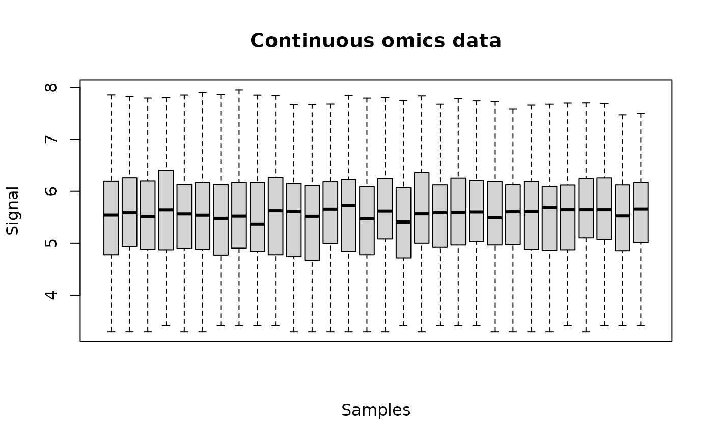
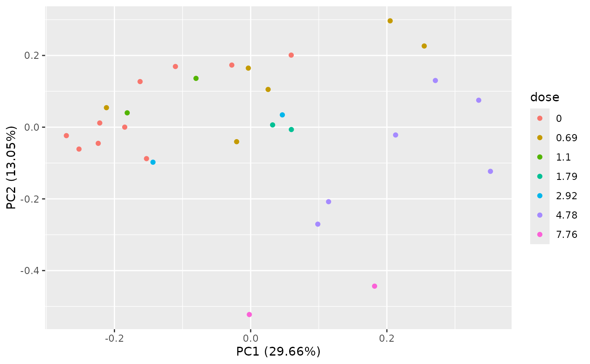

Import and check of continuous omic data (e.g. metabolomic data)
metabolomicdata.RdMetabolomic or other continuous omics data are imported from a .txt file
(internally imported using the function read.table)
and checked or from a R object of class data.frame
(see the description
of argument file for the required format
of data).
No normalization nor transformation is provided in this function.
The pretreatment of such continuous omic data data must be done before importation of data,
and data must be imported in log scale if needed (imperative for example for metabolomic data),
so that they can be directly modelled using a normal
error model. This strong hypothesis is required both for selection of items and for dose-reponse modelling.
As an example, a basic procedure for this pre-treatment of metabolomic data could follow
the three steps described thereafter:
i) removing of metabolites for which the proportion of missing data
(non detections) across all the samples is too high
(more than 20 to 50 percents according to your tolerance level);
ii) retrieving of missing values data using half minimum method
(i.e. half of the minimum value found for a metabolite across all samples);
iii) log-transformation of values.
If a scaling to the total intensity (normalization by sum of signals
in each sample) or another normalization is necessary and pertinent,
we recommend to do it before those three previously decribed steps.
Arguments
- file
The name of the .txt file (e.g.
"mydata.txt") containing one row per item, with the first column corresponding to the identifier of each item, and the other columns giving the responses of the item for each replicate at each dose or concentration. In the first line, after a name for the identifier column, we must have the tested doses or concentrations in a numeric format for the corresponding replicate (for example, if there are triplicates for each treatment, the first line could be "item", 0, 0, 0, 0.1, 0.1, 0.1, etc.). This file is imported within the function using the functionread.tablewith its default field separator (sep argument)and its default decimal separator (dec argument at "."). Alternatively an R object of classdata.framecan be directly given in input, corresponding to the output ofread.table(file, header = FALSE)on a file described as above. The two alternatives are illustrated below in examples.- backgrounddose
This argument must be used when there is no dose at zero in the data, to prevent the calculation of the BMD by extrapolation. All doses below or equal to the value given in backgrounddose will be fixed at 0, so as to be considered at the background level of exposition.
- check
If TRUE the format of the input file is checked.
- x
An object of class
"continuousomicdata".- range4boxplot
An argument passed to boxplot(), fixed by default at 0 to prevent the producing of very large plot files due to many outliers. Can be put at 1.5 to obtain more classical boxplots.
- ...
further arguments passed to print or plot functions.
Details
This function imports the data, checks their format
(see the description
of argument file for the required format
of data) and gives in the print information
that should help the user to check that the coding of data is correct :
the tested doses (or concentrations),
the number of replicates for each dose, the number of items and the identifiers
of the first 20 items.
metabolomicdata() is the first name we gave to this function.
We renamed it continuousomicdata (while keeping the first name available)
to offer its use to other
continuous omic data such as proteomics data or RT-QPCR data. Nevertheless
one should take care of the scale in which such data are imported in DRomics.
A transformation may be needed to enable the use of a normal error model
in each step of the DRomics workflow (from selection of items to modelling and
BMD calculation)
Value
continuousomicdata() returns an object of class "continuousomicdata",
a list with 7 components:
- data
the numeric matrix of responses of each item in each replicate (one line per item, one column per replicate)
- dose
the numeric vector of the tested doses or concentrations corresponding to each column of data
- item
the character vector of the identifiers of the items, corresponding to each line of data
- design
a table with the experimental design (tested doses and number of replicates for each dose) for control by the user
- data.mean
the numeric matrix of mean responses of each item per dose (mean of the corresponding replicates) (one line per item, one column per unique value of the dose
- data.sd
the numeric matrix of standard deviations of the response of each item per dose (sd of the corresponding replicates, NA if no replicate) (one line per item, one column per unique value of the dose)
- containsNA
TRUE if the data set contains NA values
The print of a continuousomicdata object gives the tested doses (or concentrations)
and number of replicates for each dose, the number of items, the identifiers
of the first 20 items (for check of good coding of data) and the normalization method.
The plot of a continuousomicdata object shows the data distribution for each dose or concentration and replicate.
See also
See read.table the function used to import data, and
microarraydata, RNAseqdata and
continuousanchoringdata for other types of data.
Examples
# (1) import and check of metabolomic data
# (an example on a subsample of a greater data set given in the package (see ?Scenedesmus))
#
datafilename <- system.file("extdata", "metabolo_sample.txt", package = "DRomics")
o <- continuousomicdata(datafilename)
#> Warning:
#> We recommend you to check that your omic data were correctly pretreated
#> before importation. In particular data (e.g. metabolomic signal) should
#> have been log-transformed, without replacing 0 values by NA values
#> (consider using the half minimum method instead for example).
print(o)
#> Elements of the experimental design in order to check the coding of the data:
#> Tested doses and number of replicates for each dose:
#>
#> 0 0.69 1.1 1.79 2.92 4.78 7.76
#> 10 6 2 2 2 6 2
#> Number of items: 109
#> Identifiers of the first 20 items:
#>
#> [1] "P_2" "P_4" "P_5" "P_6" "P_7" "P_10" "P_11" "P_12" "P_14" "P_16"
#> [11] "P_19" "P_21" "P_22" "P_26" "P_32" "P_34" "P_35" "P_36" "P_37" "P_38"
plot(o)

PCAdataplot(o)

# if you want to skip the check of data
o <- continuousomicdata(datafilename, check = FALSE)
# If you want to use your own data set just replace datafilename,
# the first argument of metabolomicdata(),
# by the name of your data file (e.g. "mydata.txt")
#
# You should take care that the field separator of this data file is one
# of the default field separators recognised by the read.table() function
# when it is used with its default field separator (sep argument)
# Tabs are recommended.
# Use of an R object of class data.frame
# An example using the complete data set
# Scenedesmus_metab (see ?Scenedesmus for details)
data(Scenedesmus_metab)
(o <- continuousomicdata(Scenedesmus_metab))
#> Warning:
#> We recommend you to check that your omic data were correctly pretreated
#> before importation. In particular data (e.g. metabolomic signal) should
#> have been log-transformed, without replacing 0 values by NA values
#> (consider using the half minimum method instead for example).
#> Elements of the experimental design in order to check the coding of the data:
#> Tested doses and number of replicates for each dose:
#>
#> 0 0.69 1.1 1.79 2.92 4.78 7.76
#> 6 3 3 3 3 3 3
#> Number of items: 224
#> Identifiers of the first 20 items:
#>
#> [1] "NAP_1" "NAP_2" "NAP_3" "NAP_4" "NAP_5" "NAP_6" "NAP_7" "NAP_8"
#> [9] "NAP_9" "NAP_11" "NAP_13" "NAP_14" "NAP_15" "NAP_16" "NAP_17" "NAP_18"
#> [17] "NAP_19" "NAP_20" "NAP_21" "NAP_22"
plot(o)